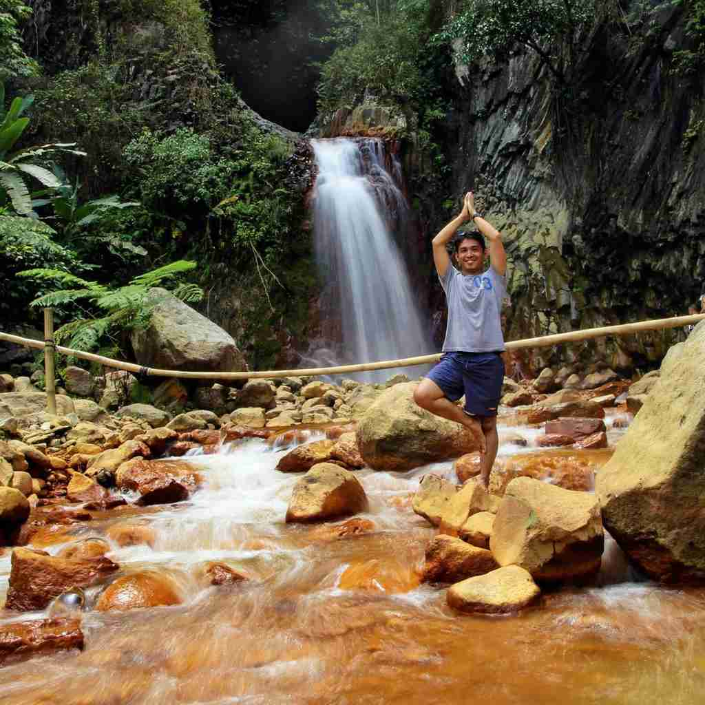

A single person can live well in Dumaguete on ₱50,000 to ₱70,000 a month, roughly $800 to $1,100. A tighter version of the same life fits inside ₱35,000 to ₱45,000. Rent swings that range more than anything else, because food, rides and phone bills here cost so little that they barely move the total.
This guide is for stays of a month up to a few years, so it goes past the tourist price list. It covers what a long lease looks like, which neighbourhoods suit which kind of resident, what aircon and internet really cost, how the visa steps work and where a budget tends to leak.
Dumaguete has around 150,000 residents, a seafront you can walk end to end and Silliman University, which opened in 1901 and keeps the city young and English easy to find. It is quiet after 10 p.m. and has no nightlife on the scale of Cebu or Manila. For many long-stayers, that is the whole appeal.

What You Need Per Month
Think in three levels. Where you land depends mostly on the apartment you pick and how often the aircon runs.
₱35,000–45,000 a month
About $550 to $750. A studio or shared house, mostly home cooking, tricycles and walking, and a prepaid phone.
₱50,000–70,000 a month
About $800 to $1,100. A one-bedroom in a good area, regular meals out, fiber internet, a gym and weekends at Apo Island, Dauin or Siquijor.
₱90,000–103,000 a month
About $1,400 to $1,650. A two-bedroom near the waterfront, a scooter or car, private health insurance and frequent dining out.
A retired couple can live comfortably on roughly $1,000 to $1,500 a month, and a family of three with rent comes to about $1,140. Dumaguete runs noticeably cheaper than Cebu City or Manila, yet the lower price still includes hospitals, fiber internet and a boulevard you can walk every evening.
Rent: The Cost That Sets Your Budget
Everything else in this guide is small change next to rent. This is what each kind of place typically costs per month in 2026.
For a one-year lease, expect to pay one month in advance plus two months as a deposit. Many landlords ask for the same on six-month leases. Airbnbs and serviced apartments cost 30 to 50 percent more than a local lease, which is the price of avoiding a contract. Most expats settle on six to twelve months, a fair balance between rent and flexibility.
Before you sign, ask five things. Is water included? Does the unit already have a fiber line, or can you install one? Does the aircon work, and who pays for servicing it? Is there a water tank or generator for brownouts? Can you see the last electricity bill? That last one matters most, because aircon is the bill that surprises people.
Where to Live: Pick a Neighbourhood by How You Move
Dumaguete has 30 barangays, but only six areas matter for most newcomers. Most people rent near the boulevard or Silliman for the first month, then move once their routine settles. Our guide on where to stay in Dumaguete by area covers short visits in more depth; the notes below lean toward people staying longer.
- Rizal Boulevard and downtownRestaurants, cafés and the seawall at sunset are all on foot, so you can skip a vehicle. The cost is noise, streets that can flood in heavy rain and the most exposure when a storm comes in. A good first-month base.
- Around Silliman UniversityLibraries, campus events and cafés, with the acacia-lined grounds close by. Students keep it lively and the noise comes with them. Suits teachers, students and anyone who wants to leave the scooter behind.
- Piapi, Bantayan and DaroNorth of the campus the city turns residential: more houses than apartments, lower rents and quiet, tree-lined streets. Daro is a gentle place to learn to ride. Expect a tricycle or your own wheels for trips downtown.
- Bagacay and MangnaoCentral barangays a few minutes from Silliman University Medical Center, the big malls and busy cafés. Quieter than the boulevard and still close to everything, which suits families and retirees who want a hospital nearby.
- ValenciaUphill and a couple of degrees cooler, with detached houses and gardens at competitive rents. Town is about a 20-minute ride away, so plan on your own transport. Many retirees land here in their second year.
- Dauin and SibulanDauin, to the south, is for weekly divers and Apo Island trips, and its beachside villas are popular with long-stay divers. Sibulan, to the north, sits near Dumaguete-Sibulan Airport and suits people who fly often.
A simple rule works well: live near the boulevard or Silliman for month one, then move to Bantayan, Daro or Valencia once you know how you really spend your days.
Utilities, Internet and Phone
Aircon is the swing factor. Electricity runs about ₱2,000 to ₱3,500 for someone who relies on a fan and uses the aircon sparingly, and ₱4,000 to ₱6,000 once the aircon stays on through the night.
Typical monthly bills
- Fiber internet: ₱1,299 for 100 Mbps from PLDT on a 36-month contract, or ₱1,499 for up to 300 Mbps from Globe GFiber
- Mobile plan: ₱500 to ₱1,000 with calls and 10 GB or more; prepaid costs less if you live on WiFi
- Internet and mobile combined: about $25 to $50
- Gym: ₱1,000 to ₱2,000
- Laundry: ₱150 to ₱200 a load, or about ₱30 a kilo for wash, dry and fold
- Drinking water: ₱50 to ₱80 per 5-gallon jug
Real-world fiber speeds land around 25 to 40 Mbps on a good day and slip during rain or the afternoon rush. Remote workers pair fiber with a Globe or Smart data plan as a backup line. Cafés suit a laptop afternoon but not a video call, and the few coworking spaces are small. A 36-month fiber contract also outlasts most leases, so find out whether the unit already has a line before you sign up for your own.
Food: Where the Budget Gets Easy
Eating is where Dumaguete is most forgiving. A plate at a local spot costs less than a coffee in a mall.
Cooking mostly local food costs ₱5,000 to ₱8,000 a month in groceries for one person. The public market is cheapest for fish, vegetables and fruit, while Lee Plaza and Robinsons Place cover the rest, including imported goods.
Put together, cooking about 70 percent of your meals and eating out for the rest comes to ₱8,000 to ₱12,000 a month. Eating at local places twice a day runs ₱12,000 to ₱18,000. Western food and café stops every day push it to ₱20,000 to ₱28,000. For a day-level look at street food and small-bill prices, see what ₱1,000 gets you in Dumaguete.
Getting Around Without a Car
You can skip the car. The core of the city is walkable and tricycles fill the gaps.
- On footThe boulevard, Silliman and downtown sit within a short walk of one another, which is why many people go a month before they want any other transport.
- TricycleThe default ride. A short trip costs ₱15 to ₱20, and downtown to Daro or Bantayan runs ₱30 to ₱50. You often share the ride with others heading the same way.
- Multicab and jeepneyThe cheapest option on fixed routes toward Valencia, Sibulan and Dauin, starting around ₱12 to ₱15 for short stretches.
- Your own wheelsScooter rental is ₱300 to ₱500 a day or ₱5,000 to ₱8,000 a month. Many long-stayers buy a second-hand one for ₱30,000 to ₱50,000 and sell it when they leave. Carry a Philippine licence or an International Driving Permit, and wear a helmet because police check.
Grab operates, but with few cars, so most people lean on tricycles or a scooter. Without a scooter, tricycle rides come to roughly ₱1,500 to ₱3,000 a month. A rented scooter and fuel brings transport to about ₱6,000.
Leaving town is easy. Dumaguete-Sibulan Airport is about 15 minutes north of the city and Cebu is a short flight away. Boats to Siquijor take roughly 45 minutes to an hour, and Apo Island is around 30 minutes by boat from Malatapay or Dauin.
Healthcare and Insurance
Routine care is solid. Dumaguete has several hospitals that stay open around the clock, and people with complex problems usually go to Cebu. Silliman University Medical Center is the major tertiary hospital, with cardiology, neurology, surgery, an ICU and modern diagnostics. Holy Child Hospital downtown is popular for emergency and routine care. The Negros Oriental Provincial Hospital is the government option, cheaper and crowded, and ACE Dumaguete Doctors Hospital is a private hospital with emergency care and surgical suites.
Typical healthcare costs
- Private clinic consultation: ₱500 to ₱1,000
- Lab tests: ₱500 to ₱3,000
- Emergency room visit: ₱2,000 to ₱5,000 before any procedures
- Dental: ₱1,000 to ₱1,500 for a cleaning, ₱1,500 to ₱3,000 for a filling
- Basic expat health insurance: ₱3,000 to ₱8,000 a month
- Comprehensive cover for over-60s: ₱10,000 and up a month
Plan on private insurance. PhilHealth does not fully cover most foreign residents, and private hospitals commonly ask for a deposit before treating you. Pharmacies such as Mercury Drug, Watsons and local botica are easy to find. Choose a doctor and a dentist in your first week, so you are not searching for one during an emergency.
Visas: How Long Can You Stay?
Visa rules follow national immigration policy, and Dumaguete has its own Bureau of Immigration office, so extensions do not need a trip to Manila. The stay builds in stages.
- Stage 1Arrival
Most nationalities get 30 days on arrival. Apply for your first extension before that period runs out.
- Stage 2Up to 59 days
The first extension adds 29 days, for 59 in total. Budget ₱3,000 to ₱5,000 per extension, plus about ₱1,000 more if you file late.
- Stage 3Beyond 59 days
You need an ACR I-Card, around ₱3,000 and valid for a year. After that come 59-day extensions and the six-month Long Stay Visitor Visa Extension, up to 36 months in total, or 24 months for nationalities that need a visa.
- Stage 4Two years or more
The SRRV suits people 40 and older who plan to settle, with a deposit requirement and multiple-entry benefits. If you are married to a Filipino citizen, the 13A marriage visa is the long-term route.
Three years of tourist extensions add up, so once you are past two years and 40 or older, price an SRRV against the extension fees. Negros Oriental recently partnered with the Philippine Retirement Authority to attract foreign retirees. Fees and rules change, so confirm the current list at the Bureau of Immigration office before each step.
A practical way to use all this: scout on tourist extensions for the first one to six months, and switch to a long-term visa only if you decide to stay two years or more.
Daily Life After the First Month
Expect heat and humidity all year, around 26 to 32°C. The rainy season runs from June to November and the dry season from December to May, and Valencia sits two or three degrees cooler. Around 5:30 p.m. the boulevard fills with joggers, students and families for the sunset, and it becomes part of your routine without trying.
Dumaguete is generally safe and easy on foot. Petty theft does happen, so lock your scooter and keep your phone off café tables. For emergencies, dial 911. Silliman gives the city its university-town feel, and many retirees find their circle through the university, a church, a dive shop in Dauin or a volunteer group.
Weekends are the reason many people stay. Snorkelling at Apo Island, a day trip to Siquijor, mountain cafés in Valencia, diving in Dauin and dolphin watching near Bais are all short trips away, which makes Dumaguete a base more than a destination.
Three Monthly Budgets, Line by Line
These are samples, not fixed prices. Your rent and your aircon habit will move the total more than anything else.
Before You Move: A Short Checklist
Before you commit
- Scout for two weeks firstStay near the boulevard, walk it, visit Daro and Valencia and view three apartments in person. Do not sign a one-year lease from abroad.
- Bring deposit cash in pesosOne month in advance plus two months as a deposit comes to ₱30,000 to ₱50,000 for a one-bedroom.
- Get a local SIM on day oneA Globe or Smart SIM covers maps, Grab and mobile data as a backup line.
- Register with Immigration earlyExtend before your 30 days run out, and keep copies of your passport and entry stamp.
- Find a doctor and dentist in week oneLearn where Silliman University Medical Center is before you need it.
- Wait a month before buying a scooterWalk and take tricycles first. You will know by then whether you need one.
The Trade You Are Making
Dumaguete asks for a small exchange. Evenings are quiet and the city is small enough that you will see the same faces at the market. In return, ₱50,000 a month covers a decent apartment, a hospital within a tricycle ride and a sunset walk on the seafront. Rent for two weeks, watch how you spend your days, and let that tell you whether the exchange suits you.

Comments
No comments yet. Been here recently? Share a tip or ask a question.
Leave a Reply